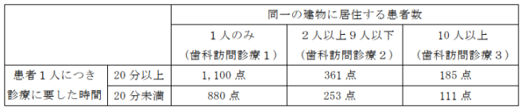

１ 歯科訪問診療１ 1,100点
２ 歯科訪問診療２ 410点
３ 歯科訪問診療３ 310点
４ 歯科訪問診療４ 160点
５ 歯科訪問診療５ 95点
注
１ １については、在宅等において療養を行っている患者（当該患者と同一の建物
に居住する他の患者に対して当該保険医療機関が同一日に歯科訪問診療を行う場合の当該患者（以下この区分番号において「同一建物居住者」という。）を除く。）であって通院が困難なものに対して、当該患者が居住する建物の屋内において、次のいずれかに該当する歯科訪問診療を行った場合に算定する。この場合において、区分番号Ａ０００に掲げる初診料又は区分番号Ａ００２に掲げる再診料は、算定できない。
イ 患者の求めに応じた歯科訪問診療
ロ 歯科訪問診療に基づき継続的な歯科診療が必要と認められた患者に対する当
該患者の同意を得た歯科訪問診療
２ ２については、在宅等において療養を行っている患者（同一建物居住者に限る。）
であって通院が困難なものに対して、当該患者が居住する建物の屋内において、当該保険医療機関が、次のいずれかに該当する歯科訪問診療を同一日に３人以下の患者に行った場合に算定する。この場合において、区分番号Ａ０００に掲げる初診料又は区分番号Ａ００２に掲げる再診料は、算定できない。
イ 患者の求めに応じた歯科訪問診療
ロ 歯科訪問診療に基づき継続的な歯科診療が必要と認められた患者に対する当
該患者の同意を得た歯科訪問診療
３ ３については、在宅等において療養を行っている患者（同一建物居住者に限る。）
であって通院が困難なものに対して、当該患者が居住する建物の屋内において、当該保険医療機関が、次のいずれかに該当する歯科訪問診療を同一日に４人以上９人以下の患者に行った場合に算定する。この場合において、区分番号Ａ０００に掲げる初診料又は区分番号Ａ００２に掲げる再診料は、算定できない。
イ 患者の求めに応じた歯科訪問診療
ロ 歯科訪問診療に基づき継続的な歯科診療が必要と認められた患者に対する当
該患者の同意を得た歯科訪問診療
４ ４については、在宅等において療養を行っている患者（同一建物居住者に限る。）
であって通院が困難なものに対して、当該患者が居住する建物の屋内において、当該保険医療機関が、次のいずれかに該当する歯科訪問診療を同一日に10人以上19人以下の患者に行った場合に算定する。この場合において、区分番号Ａ０００に掲げる初診料又は区分番号Ａ００２に掲げる再診料は、算定できない。
イ 患者の求めに応じた歯科訪問診療
ロ 歯科訪問診療に基づき継続的な歯科診療が必要と認められた患者に対する当
該患者の同意を得た歯科訪問診療
５ ５については、在宅等において療養を行っている患者（同一建物居住者に限る。）
であって通院が困難なものに対して、当該患者が居住する建物の屋内において、当該保険医療機関が、次のいずれかに該当する歯科訪問診療を同一日に20人以上の患者に行った場合に算定する。この場合において、区分番号Ａ０００に掲げる初診料又は区分番号Ａ００２に掲げる再診料は、算定できない。
イ 患者の求めに応じた歯科訪問診療
ロ 歯科訪問診療に基づき継続的な歯科診療が必要と認められた患者に対する当
該患者の同意を得た歯科訪問診療
６ ２から５までを算定する患者（歯科訪問診療料の注15又は注19に該当する場合
を除く。）について、当該患者に対する診療時間が20分未満の場合における歯科訪問診療２、歯科訪問診療３、歯科訪問診療４又は歯科訪問診療５についてはそれぞれ287点、217点、96点又は57点を算定する。ただし、２及び３について、当該患者の容体が急変し、やむを得ず治療を中止した場合は、この限りではない。
７ 歯科訪問診療料を算定する患者について、当該患者に対する診療時間が１時間
を超えた場合は、30分又はその端数を増すごとに、100点を所定点数に加算する。
８ 著しく歯科診療が困難な者に対して歯科訪問診療を行った場合（歯科診療特別
対応加算３を算定する場合を除く。）は、歯科診療特別対応加算１として、175点を所定点数に加算し、著しく歯科診療が困難な者に対して当該患者が歯科治療環境に円滑に適応できるような技法を用いて歯科訪問診療を行った場合は、歯科診療特別対応加算２として、250点を所定点数に加算し、感染症法第６条第７項に規定する新型インフルエンザ等感染症、同条第８項に規定する指定感染症又は同条第９項に規定する新感染症の患者に対して歯科訪問診療を行った場合は、歯科診療特別対応加算３として、500点を所定点数に加算する。
９ 別に厚生労働大臣が定める時間であって、入院中の患者以外の患者に対して診
療に従事している時間において緊急に歯科訪問診療を行った場合、夜間（深夜を除く。）において歯科訪問診療を行った場合又は深夜において歯科訪問診療を行った場合は、緊急歯科訪問診療加算、夜間歯科訪問診療加算又は深夜歯科訪問診療加算として、次に掲げる点数をそれぞれ所定点数に加算する。
イ 緊急歯科訪問診療加算
（１） 歯科訪問診療１を算定する場合 425点
（２） 歯科訪問診療２を算定する場合 159点
（３） 歯科訪問診療３を算定する場合 120点
（4） 歯科訪問診療４を算定する場合 60点
（5） 歯科訪問診療５を算定する場合 36点
ロ 夜間歯科訪問診療加算
（１） 歯科訪問診療１を算定する場合 850点
（２） 歯科訪問診療２を算定する場合 317点
（３） 歯科訪問診療３を算定する場合 240点
（4） 歯科訪問診療４を算定する場合 121点
（5） 歯科訪問診療５を算定する場合 72点
ハ 深夜歯科訪問診療加算
（１） 歯科訪問診療１を算定する場合 1,700点
（２） 歯科訪問診療２を算定する場合 636点
（３） 歯科訪問診療３を算定する場合 481点
（4） 歯科訪問診療４を算定する場合 249点
（5） 歯科訪問診療５を算定する場合 148点
10 別に厚生労働大臣が定める施設基準に適合しているものとして地方厚生局長等
に届け出た保険医療機関において、歯科訪問診療料を算定する患者について、歯科訪問診療に基づき、当該保険医療機関が表示する診療時間以外の時間、休日又は深夜における緊急時の診療体制を確保する必要を認め、当該患者に対し、当該保険医療機関が連携する保険医療機関（以下「連携保険医療機関」という。）に関する情報を文書により提供し、かつ、当該患者又はその家族等の同意を得て、連携保険医療機関に対し診療状況を示す文書を添えて、当該患者に係る歯科診療に必要な情報を提供した場合は、地域医療連携体制加算として、１回に限り300点を所定点数に加算する。
11 保険医療機関の所在地と訪問先の所在地との距離が16キロメートルを超えた場
合又は海路による歯科訪問診療を行った場合で、特殊の事情があったときの歯科訪問診療料は、別に厚生労働大臣が定めるところによって算定する。
12 歯科訪問診療に要した交通費は、患家の負担とする。
13 歯科訪問診療を実施する保険医療機関の歯科衛生士が、歯科医師と同行の上、
歯科訪問診療の補助を行った場合は、歯科訪問診療補助加算として、次に掲げる点数を１日につき所定点数に加算する。
イ 在宅療養支援歯科診療所１、在宅療養支援歯科診療所２、区分番号Ｂ０００
－４－２に掲げる小児口腔機能管理料の注３に規定する施設基準に適合しているものとして地方厚生局長等に届け出た診療所である保険医療機関又は在宅療養支援歯科病院の場合
（１） 同一建物居住者以外の場合 115点
（２） 同一建物居住者の場合 50点
ロ イ以外の保険医療機関の場合
（１） 同一建物居住者以外の場合 90点
（２） 同一建物居住者の場合 30点
14 １について、別に厚生労働大臣が定める施設基準に適合しているものとして地
方厚生局長等に届け出た保険医療機関において、在宅において療養を行っている患者に対して歯科訪問診療を実施した場合は、在宅歯科医療推進加算として、100点を所定点数に加算する。
15 １から５までについて、在宅療養支援歯科診療所１又は在宅療養支援歯科診療
所２以外の診療所であって、別に厚生労働大臣が定める基準を満たさないものにおいては、次に掲げる点数により算定する。
イ 初診時 267点
ロ 再診時 58点
16 区分番号Ａ０００に掲げる初診料の注１又は注２に規定する施設基準に適合し
ているものとして地方厚生局長等に届出を行っていない保険医療機関については、１から５まで又は注15若しくは注19に規定するそれぞれの所定点数から10点を減算する。
17 １について、当該保険医療機関の外来（歯科診療を行うものに限る。）を受診
していた患者であって在宅等において療養を行っているものに対して、歯科訪問診療を実施した場合は、歯科訪問診療移行加算として、次に掲げる点数を所定点数に加算する。なお、この場合において、注14に規定する加算は算定できない。
イ 区分番号Ｂ０００－４－２に掲げる小児口腔機能管理料の注３に規定する施
設基準に適合しているものとして地方厚生局長等に届け出た診療所である保険医療機関の場合 150点
ロ イ以外の場合 100点
18 １から３までについて、地域歯科診療支援病院歯科初診料、在宅療養支援歯科
診療所１、在宅療養支援歯科診療所２又は在宅療養支援歯科病院に係る施設基準に適合するものとして地方厚生局長等に届け出た保険医療機関において、当該保険医療機関の歯科衛生士等が、過去２月以内に区分番号Ｃ００１に掲げる訪問歯科衛生指導料を算定した患者であって、当該歯科衛生指導の実施時に当該保険医療機関の歯科医師が情報通信機器を用いて口腔内の状態等を観察したものに対して、歯科訪問診療を実施した場合は、通信画像情報活用加算として、患者１人につき月１回に限り、30点を所定点数に加算する。
19 １から５までについて、当該保険医療機関と特別の関係にある他の保険医療機
関等において療養を行っている患者に対して歯科訪問診療を実施した場合は、次に掲げる点数により算定する。
イ 初診時 267点
ロ 再診時 58点
20 別に厚生労働大臣が定める施設基準に適合しているものとして地方厚生局長等
に届け出た歯科診療を実施している保険医療機関において健康保険法第３条第13項に規定する電子資格確認等により得られる情報を踏まえて計画的な歯科医学的管理の下に、訪問して診療を行った場合は、在宅医療ＤＸ情報活用加算として、月１回に限り８点を所定点数に加算する。ただし、区分番号Ａ０００に掲げる初診料の注14若しくは区分番号Ａ００２に掲げる再診料の注11にそれぞれ規定する医療情報取得加算又は区分番号Ａ０００に掲げる初診料の注15に規定する医療ＤＸ推進体制整備加算を算定した月は、在宅医療ＤＸ情報活用加算は算定できない。
通知
(１) 歯科訪問診療料は、在宅等において療養を行っており、疾病、傷病のため通院による
歯科治療が困難な患者を対象としていることから、通院が容易な者に対して安易に算定できない。この場合において、療養中の当該患者の在宅等から屋外等への移動を伴わない屋内で診療を行った場合に限り算定する。なお、歯科訪問診療を実施するに当たっては、急性症状の発症時等に即応できる環境の整備が必要なことから、歯科訪問診療料は切削器具を常時携行した場合に算定する。また、この区分において、診療時間については、同一日に当該患者に対して複数回の歯科訪問診療を行った場合は、その合計した時間を診療に要した時間とし、診療時間が 20 分未満の場合については、歯科訪問診療２、歯科訪問診療３、歯科訪問診療４又は歯科訪問診療５についてはそれぞれ 287 点、217 点、96 点又は 57 点を算定する。なお、診療時間が 20 分未満の場合において、注８から注 10 まで及び注 13、注 18 若しくは注 20 に規定する加算並びに注 16 に規定する減算は、歯科訪問診療２、歯科訪問診療３、歯科訪問診療４又は歯科訪問診療５についてはそれぞれ 287 点、217 点、96 点又は 57 点にそれぞれの点数を加算又は減算し、注14 及び注 17に規定する加算は算定できない。
(２) 歯科訪問診療を実施する保険医療機関は、歯科訪問診療を開始する月の前月までに別
に厚生労働大臣が定める基準（歯科訪問診療料の「注 15」に規定する基準）を満たす旨を地方厚生（支）局長に届け出る。ただし、在宅療養支援歯科診療所１又は在宅療養支援歯科診療所２の届出を行っている場合は、この限りではない。
(３) 歯科訪問診療を行った後に、患者又はその家族等（以下この部において「患者等」と
いう。）が単に薬剤を受け取りに保険医療機関に来た場合は、再診料は算定できない。
(４) 「注１」から「注５」までに規定する「在宅等」は、介護老人保健施設、特別養護老
人ホーム等のほか、歯科、小児歯科、矯正歯科又は歯科口腔外科を標榜する保険医療機関以外の保険医療機関も含まれ、これらに入院する患者についても算定する。ただし、歯科、小児歯科、矯正歯科又は歯科口腔外科を標榜する保険医療機関に入院する患者について、当該保険医療機関の歯科医師が当該患者の入院する病院の歯科医師と連携のもとに周術期等口腔機能管理並びに回復期等口腔機能管理及びそれらに伴う治療行為を行う場合については歯科訪問診療料及びその他の特掲診療料を算定できる。
(５) 保険医療機関の歯科医師が、同一建物に居住する通院困難な患者１人のみに対し歯科
訪問診療を行う場合は、「１ 歯科訪問診療１」を算定する。
(６) 「２ 歯科訪問診療２」は、「同一建物居住者」に対して保険医療機関の歯科医師が
同日に３人以下の歯科訪問診療を行う場合に算定する。この場合において、診療時間が 20 分未満の場合については、287 点を算定する。同一建物居住者とは、基本的には、建築基準法（昭和 25 年法律第 201 号）第２条第１号に掲げる建築物に居住する複数の者をいい、例えば次のような患者をいう。
イ 老人福祉法（昭和 38 年法律第 133 号）第 20 条の４に規定する養護老人ホーム、同
法第 20 条の５に規定する特別養護老人ホーム、同法第 20 条の６に規定する軽費老人ホーム、同法第 29 条第１項に規定する有料老人ホーム、介護保険法第８条第 29 項に規定する介護医療院、高齢者の居住の安定確保に関する法律（平成 13 年４月６日法律第 26 号）第５条第１項に規定するサービス付き高齢者向け住宅、マンションなどの集合住宅等に入居又は入所している複数の患者
ロ 介護保険法第８条第９項に規定する短期入所生活介護、同条第 19 項に規定する小
規模多機能型居宅介護（指定地域密着型サービスの事業の人員、設備及び運営に関する基準第 63 条第５項に規定する宿泊サービスに限る。）、同条第 20 項に規定する認知症対応型共同生活介護、同条第 23 項に規定する複合型サービス、同法第８条の２第７項に規定する介護予防短期入所生活介護、同条第 14 項に規定する介護予防小規模多機能型居宅介護（指定地域密着型介護予防サービスの事業の人員、設備及び運営並びに指定地域密着型介護予防サービスに係る介護予防のための効果的な支援の方法に関する基準（平成 18 年厚生労働省令第 36 号）第 44 条第５項に規定する宿泊サービスに限る。）、同法第８条の２第 15 項に規定する介護予防認知症対応型共同生活介護などのサービスを受けている複数の患者
(７) 「３ 歯科訪問診療３」は、「同一建物居住者」に対して保険医療機関の歯科医師が
同日に４人以上９人以下に対して歯科訪問診療を行う場合に算定する。この場合において、診療時間が 20 分未満のものについては、217 点を算定する。
(８) 同居する同一世帯の複数の患者に対して診療を行った場合など、同一の患家において
２人以上３人以下の患者の診療を行った場合には、(６)の規定に関わらず、１人は「１歯科訪問診療１」を算定し、「１ 歯科訪問診療１」を算定した患者以外の患者については「２ 歯科訪問診療２」を算定する。また、「注 13」に規定する歯科訪問診療補助加算の要件を満たす場合においても、「１ 歯科訪問診療１」を算定した患者については施設基準に応じて「イの(１)同一建物居住者以外の場合」又は「ロの(１)同一建物居住者以外の場合」により算定し、「２ 歯科訪問診療２」を算定した患者については施設基準に応じて「イの(２)同一建物居住者の場合」又は「ロの(２)同一建物居住者の場合」により算定する。
(９) 「２ 歯科訪問診療２」又は「３ 歯科訪問診療３」による歯科訪問診療を行う場合
において、歯科訪問診療の治療中に患者の容体が急変し、医師の診察を要する場合等やむを得ず治療を中止した場合は、診療した時間が 20 分未満であっても「２ 歯科訪問診療２」又は「３ 歯科訪問診療３」の所定点数を算定する。なお、必要があって救急搬送を行った場合は、Ｃ００２に掲げる救急搬送診療料を算定しても差し支えない。
(10) 「４ 歯科訪問診療４」は、「同一建物居住者」に対して保険医療機関の歯科医師が
同日に 10 人以上 19 人以下に対して歯科訪問診療を行う場合に算定する。この場合において、診療時間が 20 分未満のものについては、96 点を算定する。
(11) 「５ 歯科訪問診療５」は、「同一建物居住者」に対して保険医療機関の歯科医師が
同日に 20 人以上に対して歯科訪問診療を行う場合に算定する。この場合において、診療時間が 20 分未満のものについては、57 点を算定する。
(12) 地域医療連携体制加算は、歯科訪問診療が必要な通院困難な患者等が安心して在宅療
養等が行えるよう、複数の保険医療機関により夜間、休日及び診療を自ら行わない時間等における緊急時の歯科診療ができる連携体制が整備されているとともに歯科訪問診療料を算定する患者の同意を得て当該患者の診療に必要な情報を他の保険医療機関の保険医等に提供及び共有すること等により、緊急時の迅速、適切な連携体制が整備されていること等を評価するものである。この場合において、緊急時は連携保険医療機関の歯科医師が対応に当たることがあり得る旨を患者等に説明するとともに、当該患者の病状、直近の診療内容等、緊急時の対応に必要な診療情報を連携保険医療機関に対し文書（電子メール、ファクシミリを含む。）により適宜提供する。なお、この連携に係る診療情報提供に係る費用は、所定点数に含まれ別に算定できない。
(13) 地域医療連携体制加算の算定による複数の保険医療機関により休日夜間等における緊
急時の歯科診療ができる連携体制の確保が必要な場合とは、歯科訪問診療において処置、手術等が必要で治療期間中に病状が急変する可能性がある場合等をいい、病状が急変する可能性がなくなった場合は、当該加算の算定を中止する。
(14) 地域医療連携体制加算を算定する保険医療機関は、患者等に「特掲診療料施設基準通
知」の様式 21 の３又はこれに準じた様式の文書を必ず提供するとともに、当該文書の写しを診療録に添付する。
(15) 地域医療連携体制加算を算定する保険医療機関は、患者等の同意を得て、歯科訪問診
療料の算定対象となる療養に必要な情報を連携保険医療機関に対してあらかじめ文書（「特掲診療料施設基準通知」の様式 21 の２又はこれに準じた様式の文書に限る。）をもって提供し、その写しを診療録に添付する。また、引き続き地域医療連携体制加算の算定による緊急時等の対応が必要であり、病態の変化が生じた場合は、改めて連携保険医療機関に対し情報提供を行う。なお、連携保険医療機関等の変更にともない患者に対し再度の情報提供を行った場合の費用は、第１回目に含まれ別に算定できない。
(16) 当該患者の病状急変時等に、連携保険医療機関の歯科医師が緊急に診療又は歯科訪問
診療等を行った場合は、歯科初診料、歯科再診料、歯科訪問診療料等は診療又は歯科訪問診療等を行った歯科医師の保険医療機関が算定する。この場合、当該患者の病状急変等に対応して、診療又は歯科訪問診療等を行ったこと及びその際の診療内容等を、地域医療連携体制加算を算定する保険医療機関の主治医に速やかに報告し、当該主治医は治療の要点を当該患者の診療録に記載する。
(17) 地域医療連携体制加算を算定する場合は、休日、夜間等における緊急時に対応し得る
よう、できる限り患家に近隣の保険医療機関を連携保険医療機関とする。
(18) 地域医療連携体制加算に係る連携保険医療機関においては、主治医から提供された患
者の療養に必要な情報が記載された文書を緊急時に十分に活用できる状態で保管し、自ら当該患者を診療し診療録を作成した場合は、当該文書を診療録に添付する。
(19) 地域医療連携体制加算は、１人の患者につき同一の初診で１回に限り算定する。
(20) 特定の被保険者の求めに応ずるのではなく、保険診療を行う目的をもって定期又は不
定期に在宅等へ赴き、被保険者（患者）を診療する場合は、歯科訪問診療として取り扱うことは認められず、歯科訪問診療料及びその他の特掲診療料は算定できない。
(21) 歯科訪問診療料を算定する場合は、当該初診期間における第１回目の歯科訪問診療の
際に、当該患者の病状に基づいた訪問診療の計画を定めるとともに、その計画の要点を診療録に記載すること。２回目以降に計画の変更を行う場合は、変更の要点を診療録に記載する。なお、２回以上の継続的な歯科訪問診療が予定される場合においては、次回の診療日までの間に計画書を作成し、当該計画書の写しを診療録に添付しても差し支えない。
(22) 「注８」の「著しく歯科診療が困難な者」とは、次に掲げる状態又はこれらに準ずる
状態をいう。なお、歯科診療特別対応加算１又は歯科診療特別対応加算２を算定した場合は、当該加算を算定した日の患者の状態（トに該当する患者の場合は病名）を診療録に記載する。
イ 脳性麻痺等で身体の不随意運動や緊張が強く体幹の安定が得られない状態
ロ 知的発達障害等により開口保持ができない状態や治療の目的が理解できず治療に協
力が得られない状態
ハ 重症の呼吸器疾患等で頻繁に治療の中断が必要な状態
ニ 日常生活に支障を来たすような症状・行動や意志疎通の困難さが頻繁に見られ歯科
診療に際して家族等の援助を必要とする状態
ホ 人工呼吸器を使用している状態又は気管切開等を行っており歯科治療に際して管理
が必要な状態
へ 強度行動障害の状態であって、日常生活に支障を来すような症状・行動が頻繁に見
られ、歯科治療に協力が得られない状態
ト 次に掲げる感染症に罹患しており、標準予防策に加えて、空気感染対策、飛沫感染
対策、接触感染対策など当該感染症の感染経路等の性質に応じて必要な感染対策を講じた上で歯科診療を行う必要がある状態
（ア） 狂犬病
（イ） 鳥インフルエンザ（特定鳥インフルエンザを除く。）
（ウ） エムポックス
（エ） 重症熱性血小板減少症候群（病原体がフレボウイルス属ＳＦＴＳウイルス
であるものに限る。）
（オ） 腎症候性出血熱
（カ） ニパウイルス感染症
（キ） ハンタウイルス肺症候群
（ク） ヘンドラウイルス感染症
（ケ） インフルエンザ（鳥インフルエンザ及び新型インフルエンザ等感染症を除
く。）
（コ） 後天性免疫不全症候群（ニューモシスチス肺炎に限る。）
（サ） 麻しん
（シ） メチシリン耐性黄色ブドウ球菌感染症
（ス） ＲＳウイルス感染症
（セ） カルバペネム耐性腸内細菌目細菌感染症
（ソ） 感染性胃腸炎（病原体がノロウイルスであるものに限る。）
（タ） 急性弛緩性麻痺（急性灰白髄炎を除く。病原体がエンテロウイルスによる
ものに限る。）
（チ） 新型コロナウイルス感染症
（ツ） 侵襲性髄膜炎菌感染症
（テ） 水痘
（ト） 先天性風しん症候群
（ナ） バンコマイシン耐性黄色ブドウ球菌感染症
（ニ） バンコマイシン耐性腸球菌感染症
（ヌ） 百日咳
（ネ） 風しん
（ノ） ペニシリン耐性肺炎球菌感染症
（ハ） 無菌性髄膜炎（病原体がパルボウイルスＢ19 によるものに限る。）
（ヒ） 薬剤耐性アシネトバクター感染症
（フ） 薬剤耐性緑膿菌感染症
（ヘ） 流行性耳下腺炎
（ホ） 感染症法第６条第３項に規定する二類感染症
(23) 「注８」の「歯科治療環境に円滑に適応できるような技法」とは、歯科診療の開始に
当たり、患者が歯科治療の環境に円滑に適応できるための方法として、Tell-Show-Do法などの系統的脱感作法並びにそれに準拠した方法、オペラント法、モデリング法、TEACCH 法、遊戯療法、ボイスコントロール法等の患者の行動を調整する専門的技法をいう。なお、歯科診療特別対応加算２を算定した日は、患者の状態及び用いた専門的技法の名称を診療録に記載する。
(24) 「注８」に規定する歯科診療特別対応加算３は、新型インフルエンザ等感染症等の患
者に対して、感染対策を実施した上で歯科診療を行った場合に加算する。なお、当該加算を算定した場合は、病名を診療録に記載する。
(25) 歯科訪問診療料を算定した場合において、それぞれの患者の診療に要した時間が１時
間を超えた場合は、「注７」の加算を算定する。
(26) 「注６」及び「注７」に規定する診療時間は、診療前の準備、診療後の片付けや患者
の移動に要した時間及び併せて実施したＣ００１に掲げる訪問歯科衛生指導料又はＢ００１－２に掲げる歯科衛生実地指導料の算定の対象となる指導の時間を含まない。また、交通機関の都合その他診療の必要以外の事由によって患家に滞在又は宿泊した場合は、その患家滞在の時間は診療時間に算入しない。
(27) 歯科訪問診療を行った場合は、診療録に次の事項を記載する。ただし、ロに関しては、
歯科訪問診療を開始した日に限り記載することとするが、変更が生じた場合は、その都度記載する。また、ハに関して、(９)の場合においては急変時の対応の要点を記載する。
イ 実施時刻（開始時刻と終了時刻）
ロ 訪問先名（記載例：自宅、○○マンション、介護老人保健施設× × 苑）
ハ 歯科訪問診療の際の患者の状態等（急変時の対応の要点を含む。）
(28) 疾病等のため通院による歯科治療が困難な場合以外の歯科訪問診療の必要性を認めな
い患者は、歯科訪問診療料及び歯科診療に係る費用は算定できない。
(29) 「注７」の加算は、患者それぞれについて算定し、複数の患者に対し訪問して歯科
診療を行った場合の診療時間の合算はできない。
(30) 「注９」に規定する加算は、保険医療機関において、標榜時間内であって、入院中の
患者以外の患者に対して診療に従事しているときに、患者又は現にその看護に当たっている者から緊急に求められて歯科訪問診療を行った場合に算定する。
(31) 「注９」に規定する「別に厚生労働大臣が定める時間」とは、保険医療機関において
専ら診療に従事している時間であって、概ね午前９時から午後６時までの間とする。
(32) 「注９」に規定する加算の対象となる緊急な場合とは、患者又は現にその看護に当た
っている者からの訴えにより、速やかに歯科訪問診療をしなければならないと判断した場合をいい、手術後の急変等が予想される場合をいう。
(33) 夜間（深夜の時間帯を除く。）とは概ね午後６時から翌日の午前６時まで、又は午後
７時から翌日の午前７時までのように、12 時間を標準として各都道府県において統一的取扱いをすることとし、深夜の取扱いは、午後 10 時から午前６時までとする。ただし、これらの時間帯が標榜時間に含まれる場合、夜間歯科訪問診療加算及び深夜歯科訪問診療加算は算定できない。
(34) 保険医療機関の所在地と患家の所在地との距離が 16 キロメートルを超える歯科訪問
診療は、当該保険医療機関からの歯科訪問診療を必要とする絶対的な理由がある場合に認められるものであって、この場合において、歯科訪問診療料の算定は、16 キロメートル以内の場合と同様に取り扱う。この絶対的に必要であるという根拠がなく、特に患家の希望により 16 キロメートルを超える歯科訪問診療をした場合の歯科訪問診療は保険診療としては算定できないことから、患者負担とする。この場合において、「保険医療機関の所在地と患家の所在地との距離が 16 キロメートルを超えた場合」とは、当該保険医療機関を中心とする半径 16 キロメートルの圏域の外側に患家が所在する場合をいう。
(35) 保険医療機関の所在地と患家の所在地との距離が 16 キロメートル以上の地域に居住
する歯科医師に対して主治医が歯科訪問診療による対診を求めることができるのは、患家付近に他の歯科医師がいない、いても専門外である、旅行中で不在である等やむを得ない絶対的理由のある場合に限り認められる。
(36) 「注 12」に規定する交通費は実費とする。
(37) その他、歯科訪問診療料の取扱いは、平成６年厚生省告示第 235 号による改正前の往
診料に関する既往の通知が引き続き有効であるが、この場合において、当該通知中「往診」とあるのは「歯科訪問診療」と読み替えてこれを適用する。
(38) 「注 13」に規定する歯科訪問診療補助加算は、歯科訪問診療料を算定した日におい
て、当該診療が必要な患者に対して、歯科訪問診療を実施する保険医療機関に属する歯科医師と当該保険医療機関に属する歯科衛生士が同行し、当該歯科医師の行う歯科訪問診療中は、歯科訪問診療の補助が適切に行える体制の上で、実際に当該歯科衛生士がＣ０００に掲げる歯科訪問診療料の算定の対象となる歯科訪問診療の時間を通じて、歯科訪問診療の補助を行った場合に算定する。また、施設基準に応じて、同一建物居住者以外の歯科訪問診療時は本区分の「イの(１) 同一建物居住者以外の場合」又は「ロの(１) 同一建物居住者以外の場合」により算定し、同一建物居住者の歯科訪問診療時は本区分の「イの(２) 同一建物居住者の場合」又は「ロの(２) 同一建物居住者の場合」により算定する。なお、当該加算を算定した場合は、診療録に診療の補助を行った歯科衛生士の氏名を記載する。
(39) 「注 14」に規定する在宅歯科医療推進加算は、在宅療養患者（(６)のイ（集合住宅
にあっては、高齢者の居住の安定確保に関する法律第５条に該当する住宅に限る。）に入居若しくは入所している患者又はロのサービスを受けている患者以外の患者をいう。以下同じ。）に対して「１ 歯科訪問診療１」を算定した場合に所定点数に加算する。
(40) 在宅療養支援歯科診療所１又は在宅療養支援歯科診療所２以外の診療所であって、
別に厚生労働大臣が定める基準を満たさないもの（主として歯科訪問診療を実施する診療所）が歯科訪問診療を実施した場合又は別に厚生労働大臣が定める基準を満たす旨を地方厚生(支)局長に届け出ていないものが歯科訪問診療を実施した場合は、「注15」に規定する歯科訪問診療料により算定する。
(41) 「２ 歯科訪問診療２」、「３ 歯科訪問診療３」、「４ 歯科訪問診療４」、「５
歯科訪問診療５」、「注 15」又は「注 19」に規定する歯科訪問診療料を算定した場合であって、在宅療養患者以外の患者に対して歯科訪問診療を実施した場合は、歯科訪問診療を実施した日の属する月に、歯科訪問診療を行った日時及び訪問診療を行った歯科医師の氏名が記載された文書を患者若しくはその家族又は介護施設職員等の関係者のいずれかに提供するとともに、提供文書の写しを保険医療機関に保管する。なお、同一施設において、歯科訪問診療を実施した日の属する月に「２ 歯科訪問診療２」、「３ 歯科訪問診療３」、「４ 歯科訪問診療４」、「５ 歯科訪問診療５」、「注 15」又は「注 19」に規定する歯科訪問診療料を複数回算定した場合であって、患者又はその家族以外の介護施設職員等に当該文書を提供するときは、その提供先を明確にした上で、施設を単位として一覧表で作成しても差し支えない。
(42) 「注 15」に規定する歯科訪問診療料を算定した場合において、「注７」、「注８」、
「注 10」、「注 18」又は「注 20」の加算は算定できる。
(43) 「注 16」について、「１ 歯科訪問診療１」、「２ 歯科訪問診療２」、「３ 歯
科訪問診療３」、「４ 歯科訪問診療４」又は「５ 歯科訪問診療５」を算定する場合において診療時間が 20 分未満の場合は、「注６」に規定する方法により算定した点数を所定点数とし、(１)の表に示す各区分の点数から 10 点を減算するものとする。
(44) 「注 17」に規定する歯科訪問診療移行加算は、在宅等療養患者であって、当該保険
医療機関の外来（歯科診療を行うものに限る。）を継続的に受診していたものに対して「１ 歯科訪問診療１」を算定した場合に所定点数に加算する。ただし、当該保険医療機関の外来を最後に受診した日（初診料又は再診料を算定した日）から起算して３年以内に歯科訪問診療を実施した場合に限る。
(45) 「注 18」に規定する通信画像情報活用加算は、Ｃ００１に掲げる訪問歯科衛生指導
料を算定する日（Ｃ０００に掲げる歯科訪問診療料を算定する日を除く。）において、歯科衛生士等がリアルタイムで口腔内の画像（以下、「口腔内ビデオ画像」という。）を撮影できる装置を用いて、患者の口腔内の状態等を撮影し、当該保険医療機関において、歯科医師がリアルタイムで当該口腔内ビデオ画像により当該患者の口腔内を観察（ビデオ通話に準ずる方式）し、得られた情報を次回の歯科訪問診療に活用した場合に算定する。
(46) 「注 18」に規定する通信画像情報活用加算を算定する場合には、歯科医師は、当該
患者の観察の内容、観察を行った日等の要点を診療録に記載する。
(47) 「注 18」に規定する通信画像情報活用加算は、直近の歯科訪問診療料を算定した日
から当該加算を算定するまでの期間において、歯科衛生指導の実施時に当該保険医療機関の歯科医師が情報通信機器を用いて口腔内等の状態を観察した場合に算定できる。
(48) 「注 18」に規定する通信画像情報活用加算を算定する場合に、当該観察を行う際の
情報通信機器の運用に要する費用については、療養の給付と直接関係ないサービス等の費用として別途徴収できる。
(49) 保険医療機関が、当該保険医療機関と特別の関係にある保険医療機関等を訪問し、
歯科訪問診療を実施した場合は、「注 19」に規定する歯科訪問診療料により算定する。
(50) 「注 19」に規定する歯科訪問診療料を算定した場合において、「注７」、「注８」、「注９」、
「注 10」、「注 13」、「注17」、「注 18」又は「注 20」の加算は算定できる。
(51) 「注 20」に規定する在宅医療ＤＸ情報活用加算は、在宅歯科医療における診療計画
の作成において居宅同意取得型のオンライン資格確認等システム等、電子処方箋及び電子カルテ情報共有サービス等により取得された患者の診療情報や薬剤情報等（以下この項において「診療情報等」という。）を活用することで質の高い歯科医療を実施することを評価するものであり、別に厚生労働大臣が定める施設基準を満たす保険医療機関において当該診療情報等を踏まえて、計画的な医学管理の下に、訪問して歯科診療を行った場合は、在宅医療ＤＸ情報活用加算として、月１回に限り所定点数に８点を加算する。
(52) 在宅医療ＤＸ情報活用加算の算定に当たっては、初回の歯科訪問診療の場合には、
歯科訪問診療に係る計画の作成において、あらかじめ、診療情報等を活用していない場合には算定できない。ただし、あらかじめ情報を取得している場合であって、初回の歯科訪問診療の際に患者の診療情報等を活用可能な場合には、初回の歯科訪問診療から算定できる。
(53) Ａ０００に掲げる初診料の「注 14」若しくはＡ００２に掲げる再診料の「注 11」に
規定する医療情報取得加算又はＡ０００に掲げる初診料の「注 15」に規定する医療ＤＸ推進体制整備加算を算定した月は、在宅医療ＤＸ情報活用加算は算定できない。
(54) 歯科訪問診療料を算定する保険医療機関においては、歯科訪問診療を行っている保
険医療機関である旨を院内掲示により患者に対して情報提供を行うよう努める。